Late night bakes: The richest, maltiest & milkiest cookie to ever exist
24 Feb 2025 · Written by Chompak Koonnawarote
Episode 1
This blog marks the start of my new series: Late night bakes. Baking to me is a form of relaxation and self-care, where my brain gets to slow down and be mindful of the day. I often try new recipes or bake that craving that I’ve had all day. Here I will show you what I’ve made- some of my own and others from recipes I’ve found interesting either from the internet or a book. If the recipe is from the latter, I will credit the owner in each post and give you my opinions on them.
Now let’s get on with these cookies. I have been on a quest to elevate an otherwise ‘basic’ recipe. A recipe for chocolate chip cookies tend to have a similar list of ingredients: butter, sugars, eggs and flour in varying amounts. So I thought to myself ‘How can I make this better?’. Adding more flour/ granulated sugar results in a crispier cookie, more brown sugar for a chewier cookie with deeper caramel notes. Adjusting these ratios don’t do much in terms of flavour. That’s when a lightbulb lit up- what if I intensify as many ingredients as I could before adding them together? Ask and you shall find out.
Here are some steps I did to realllyyy enhance the flavour
- BROWN. YOUR. BUTTER. Don’t skip this. You can brown the butter in advance. You can even make a big batch and keep it in the fridge until needed. The caramelised milk solids are ultra-buttery with deep, nutty notes.
- Toast the milk powder. This is the same idea as browning your butter. In this case, we are adding even more of that deep, toasty flavour to our cookies without any extra liquid. This further concentrates the flavour.
- Substitute white granulated sugar for golden granulated sugar. Extra molassy.
- Malt extract. There is a limit to how ‘malty’ malted milk powders such as Ovaltine or Horlicks can give. Extracts are much more intense.
- Chilling the dough overnight allows the flour to absorb fully and flavours to incorporate. Chill your dough for a minimum of 2 hours if you can.
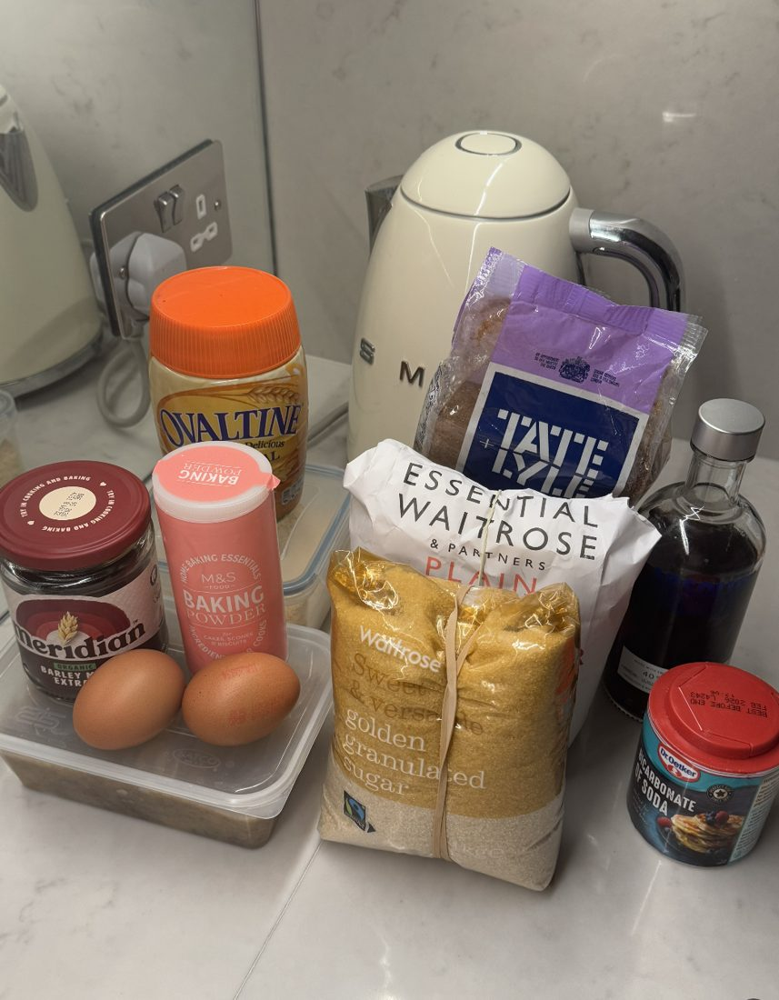
Ingredients
Makes 15-18
- 280g all-purpose flour
- 230g browned butter, softened
- 150g golden granulated sugar
- 165g dark brown sugar
- 2 medium eggs (around 50g each, with shell)
- 30g malted milk powder
- 40g toasted milk powder
- 2 teaspoons vanilla extract
- 1 teaspoon baking soda
- 1/2 teaspoon salt
- 150g dark chocolate, broken into medium-sized chunks (I used a combination of 73% and 75% here, use whatever percent you have on hand)
Instructions
- Sift dry ingredients into a bowl, making sure it is evenly distributed
- In a separate bowl, cream your browned butter and both sugars until light and fluffy. Colour should change from brown to light-ish yellow
- Add one egg at a time, scraping the bowl as you go
- Add vanilla and malt extract
- Slowly add your dry ingredients (I did 3 spoonfuls at a time, making sure to scrap the bowl after each addition)
- When dough comes together into a shiny-ish ball, fold in your mix-ins
- Cover with cling film and refrigerate overnight or at least 2 hours
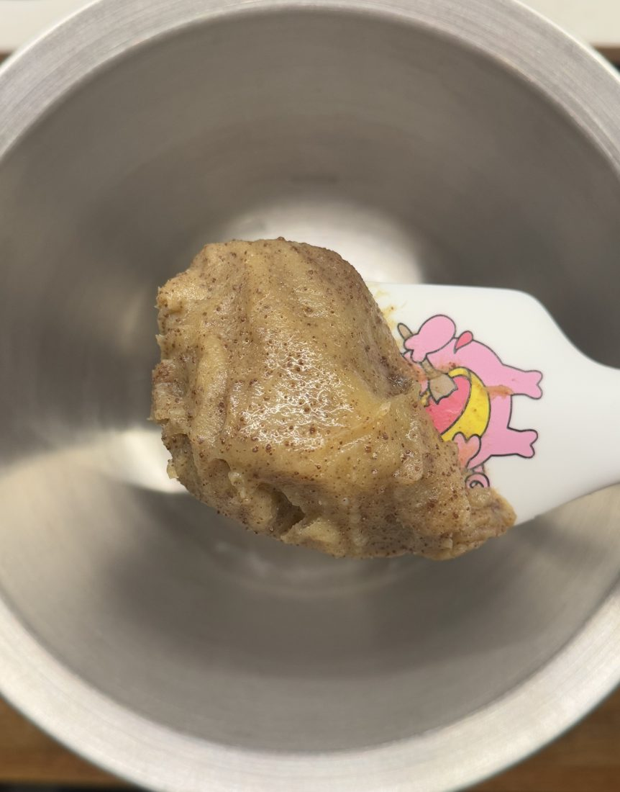
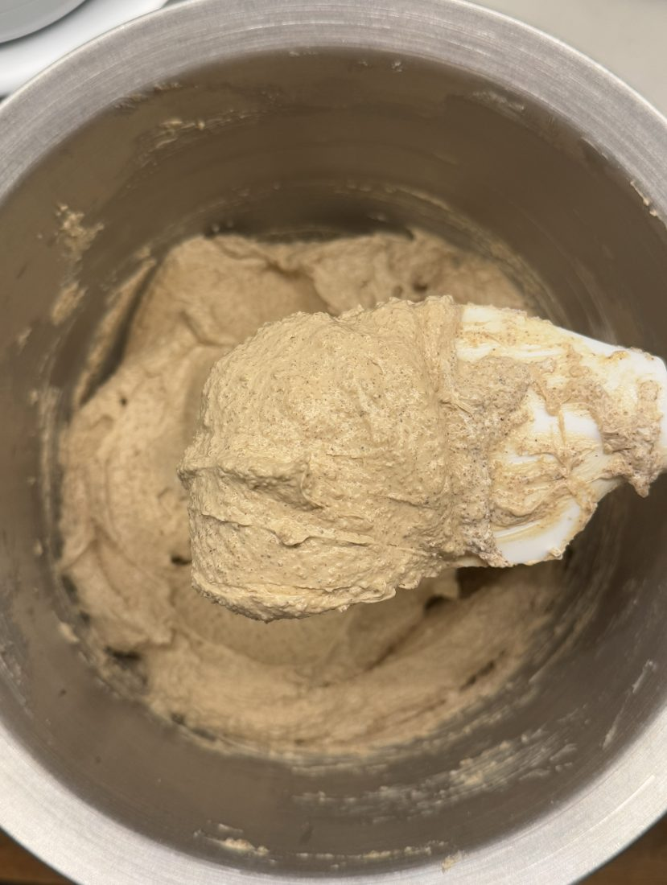
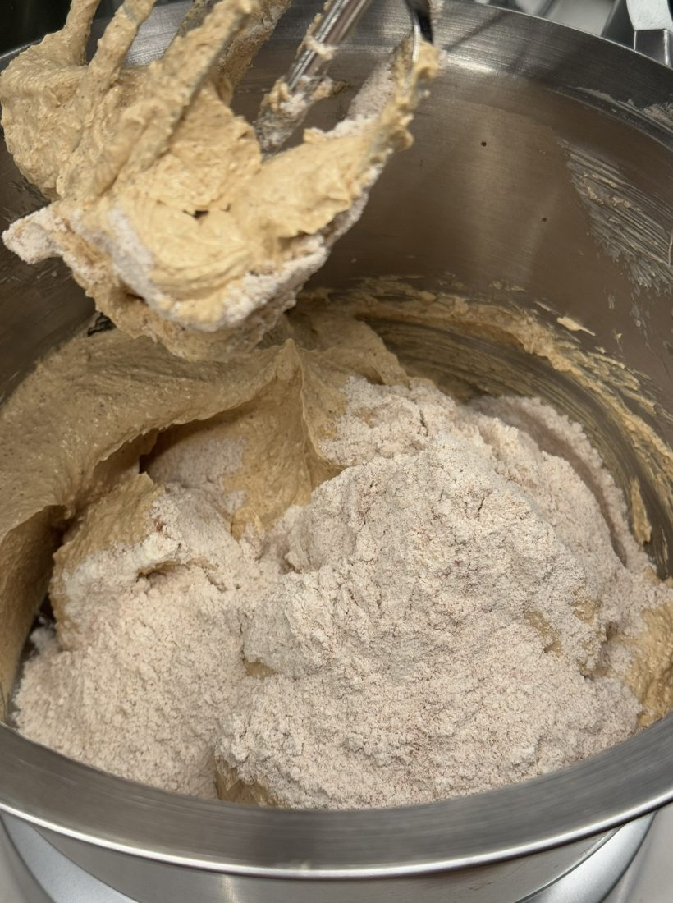
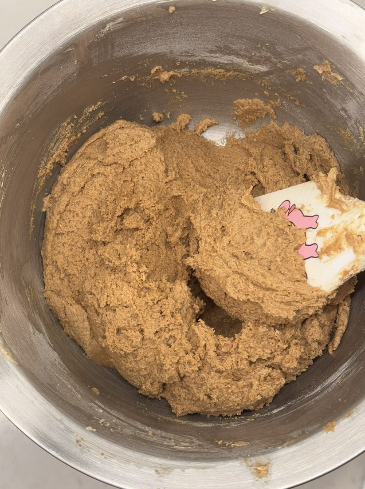
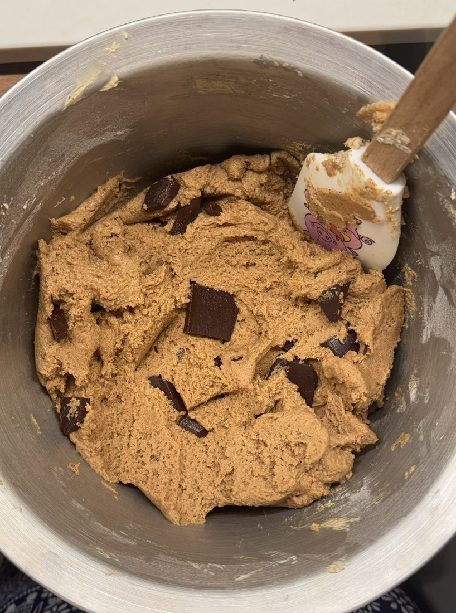
Notes on chocolate
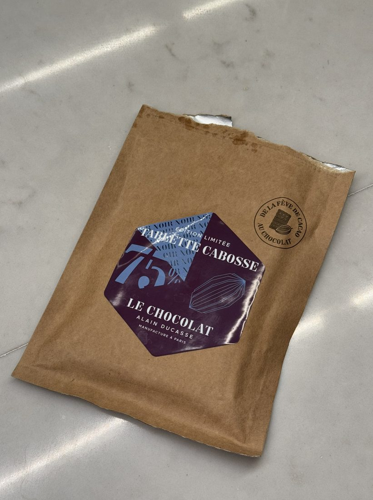
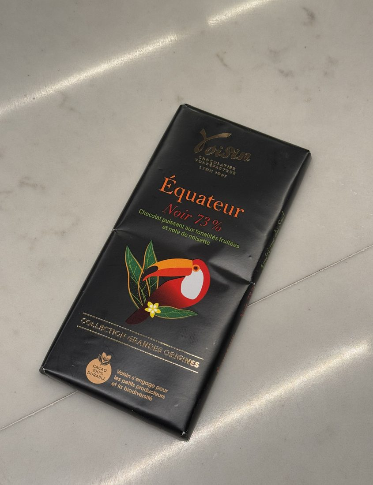
Baking Instructions
- Remove dough from the fridge and allow to come back to room temperature slightly
- Preheat your oven to 180C, fan-assisted
- Using a kitchen scale, roll your dough into 55g balls
- Arrange dough on a baking tray lined with greaseproof paper, leaving ample space for cookies to spread
- Bake for 11 minutes
- Remove from oven, immediately sprinkle on flaky sea salt and leave to cool. The cookies will continue to bake whilst cooling.
Et voilà, bon appétit!
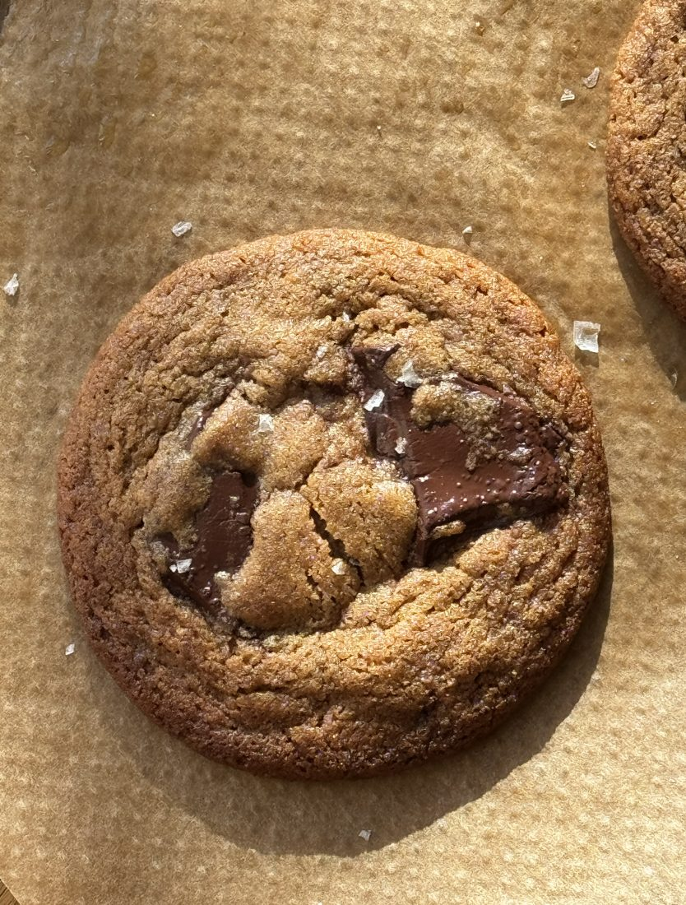
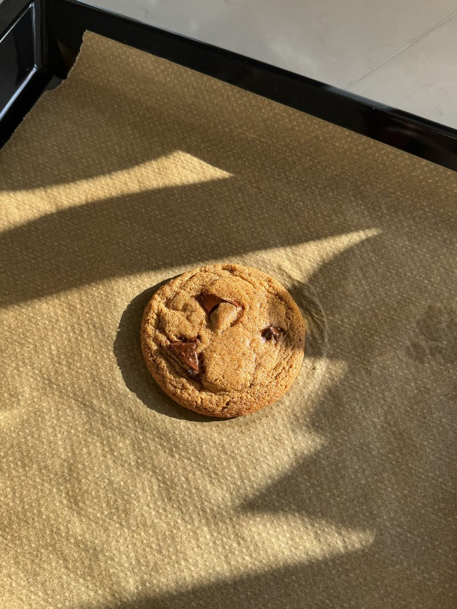
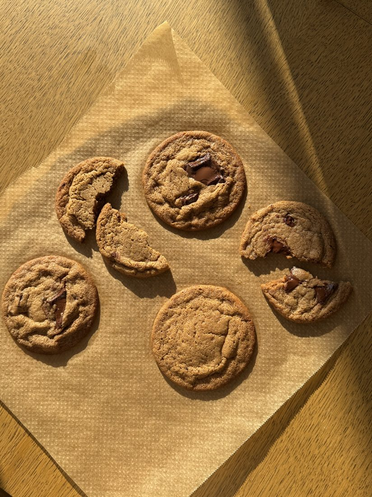
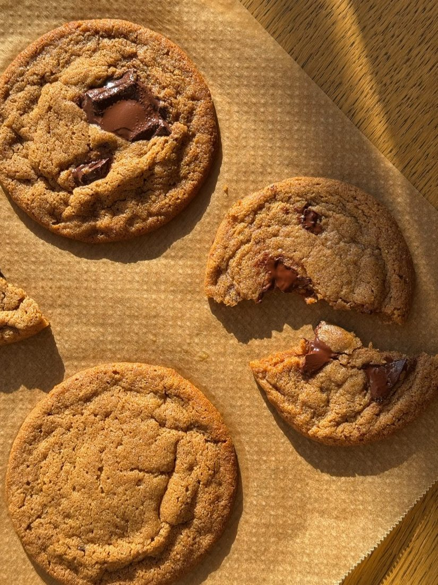